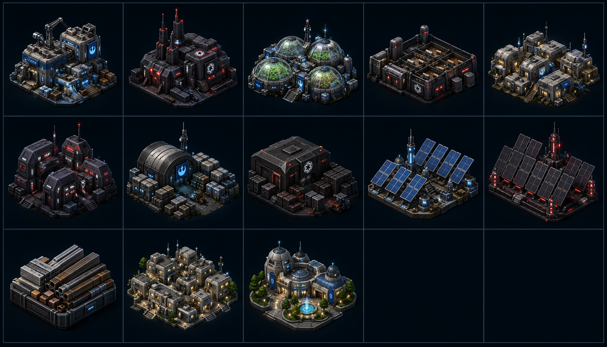

Rebel Baumaterialfabrik
Modulare Frontier-Fabrik mit blau-weißen Utility-Lichtern.
building · 61010100Imperiale Baumaterialfabrik
Angularer dunkler Industriekomplex mit roten Statuslichtern.
building · 61010300Rebel Farm
Pragmatische Hydroponik- und Agrarkuppeln für Frontier-Kolonien.
building · 21010100Imperiale Targfarm
Kontrollierter Agrar-/Livestock-Komplex mit Feed-Modulen.
building · 21010300Rebel Häuser
Modularer Habitat-Cluster mit warmen Siedlungsfenstern.
building · 11010100Imperiale Häuser
Austere, kantige Wohnmodule mit rot-weißer Beleuchtung.
building · 11010300Rebel Lager
Praktischer Storage-Depot-Look mit Cargo-Modulen und Antennen.
building · 81210100Imperiale Lager
Geordnete Supply-Bays aus dunklem Metall mit roten Markern.
building · 81210300Rebel Solarzellen
Kompaktes Power-Array mit blauen Energie-Glints.
building · 31010100Imperiale Solarzellen
Symmetrisches dunkles Panel-Array mit roten Kontrollpylonen.
building · 31010300Baumaterial
Industrie-Crates, Paneele und Barren als kompaktes Supply-Icon.
resource · id 2Wohnhäuser
Housing-Capacity-Icon als kompakter Habitat-Block.
resource · id 1101Lebensstandard
Poliertes Amenities-Modul für zivile Versorgung und Wohlstand.
resource · id 1300